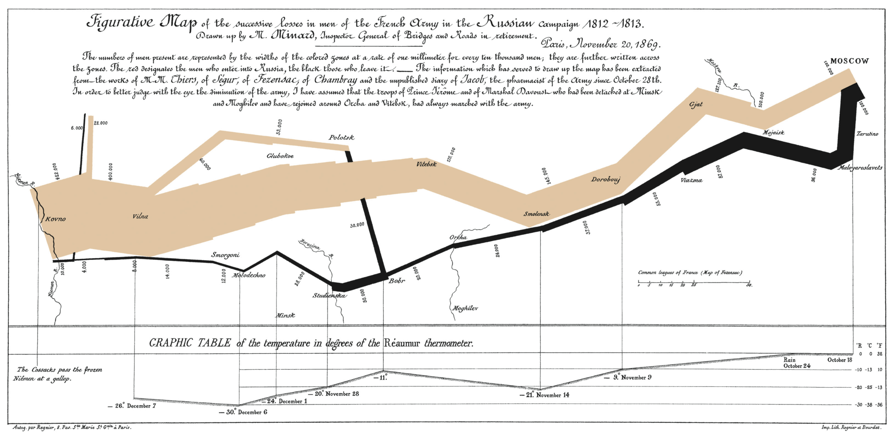
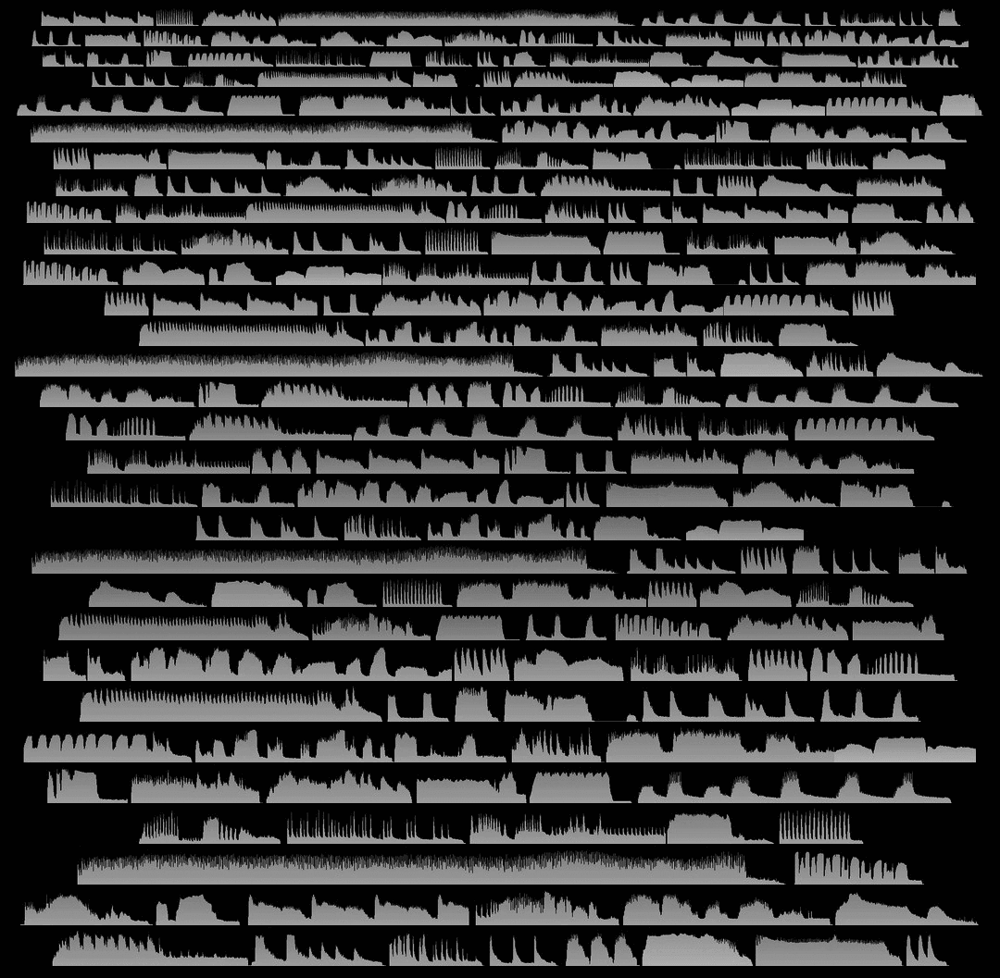

Post 03
Placeholder longform article number 03 for testing the full reading page
- 6 minutes read
- #post
- #placeholder
- #03
- Published on February 7, 2026.
- Last revised on February 7, 2026.
Opening
Post 03 is another deliberately ordinary page. It exists so the archive can feel inhabited, and so the reading template gets exercised by more than a single showcase article. The large image above changes the opening rhythm immediately, which is why it is useful to have at least a few posts that begin visually instead of typographically.Hero images create a very different first screen: less austere, more magazine-like, and much more dependent on vertical pacing.
In practice, a mock page like this helps reveal whether the title is carrying too much visual weight or whether the body text settles into a pleasant rhythm quickly enough. It also tests whether the title still feels anchored once it no longer has the familiar dinkus above it.
Notes
Once a site has three or four pages using the same skeleton, tiny inconsistencies become much easier to spot. That is part of why repetitive placeholder content is so useful. Variation is equally useful, though, because it shows whether the skeleton remains stable once small exceptions begin piling up.
The words may be disposable, but the proportions they expose are not. Neither are the transitions between image, title, metadata, and section text.
Secondary Material
Longer articles tend to accumulate side trails: throwaway references, little comparisons, and mildly distracting examples that are best kept nearby but not fully embedded in the main line of thought.

sum_positive:
xor eax, eax
xor ecx, ecx
.Lloop:
cmp rcx, rsi
je .Ldone
mov edx, DWORD PTR [rdi + rcx*4]
test edx, edx
jle .Lskip
add eax, edx
.Lskip:
add rcx, 1
jmp .Lloop
.Ldone:
retThat snippet is intentionally half serious and half nonsense. It is there to test code styling, not to document anything meaningful.